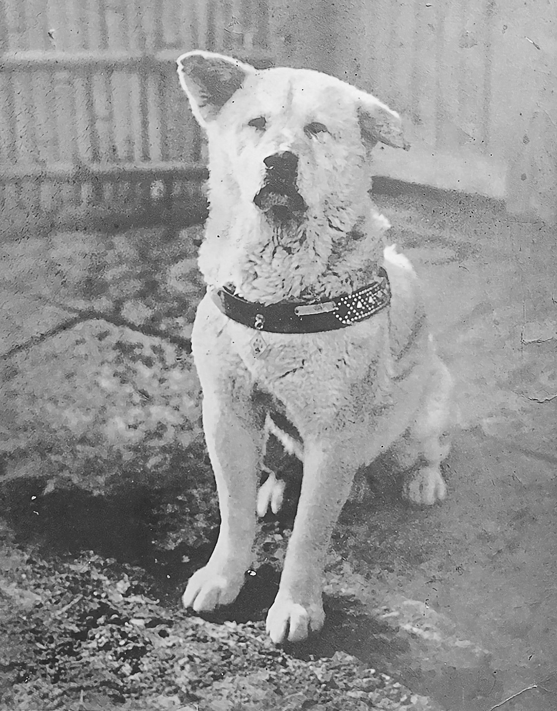
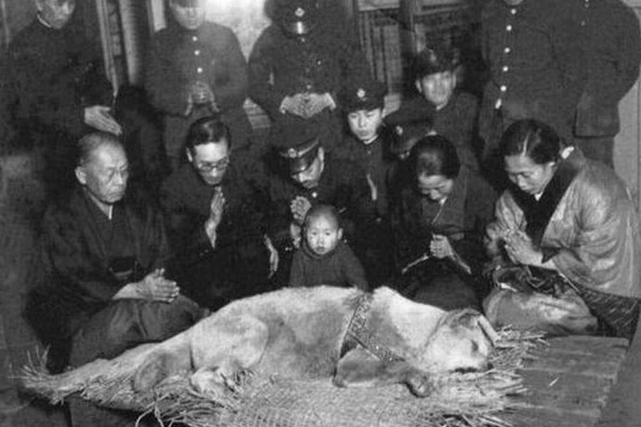

Хатико
Рождение
Хатико появился на свет 10 ноября 1923 года в японской префектуре Акита. Фермер решил подарить щенка профессору Хидэсабуро Уэно, работавшему в Токийском университете. Профессор дал щенку кличку Хатико — от хати (яп. ハチ, «восемь») и суффикса (яп. 公 ко:), обозначающего привязанность или зависимость, так как пёс был восьмой по счёту собакой профессора.
Каждый день, как по часам
Человек и собака со дня знакомства стали неразлучны. Профессор обожал своего пса, но не так, как пес обожал его. Хатико всегда был рядом, кроме времени, которое Хидэсабуро Уэно проводил на работе. Реальная история преданной собаки Хатико гласит, что пес шел за своим хозяином до станции Сибуя, провожая его в город на работу. После этого он уходил домой, но ровно в три часа дня снова стоял на станции в ожидании своего человека. Так продолжалось изо дня в день.
Смерть хозяина
Реальная история Хатико не стала бы известна всему миру, если бы не случилась беда. Жизнь собаки резко изменилась 21 мая 1925 года, когда впервые в жизни он не дождался профессора. Нет, он не ушел, профессор не вышел на другой станции, человека просто не стало совсем! В университете у Хидэсабуро Уэно случился инфаркт, врачи ничего не смогли поделать. В этот день Хатико стал сиротой, на тот момент псу было всего полтора года. Несмотря на то что на станции пес более не замечал такого любимого человека, он все же не оставил надежду. Каждый день Хатико приходил на знакомое место, и ждал, печально вглядываясь в лица прохожих. Такое поведение собаки не могло остаться незамеченным. Друзья профессора и его родственники безуспешно пытались пристроить его в своих домах, пес просто сбегал, и как и раньше шел на станцию в ожидании все же увидеть своего хозяина. Ждал Хатико профессора до самого позднего вечера, а ночевать приходил на крыльцо его дома, в котором уже жили чужие люди.
Популярность
На станции пса подкармливали железнодорожники и торговцы, каждый из них сочувствовал собаке, переживал за ее судьбу, но восхищался такой неимоверной преданностью и настойчивостью. Вся Япония узнала реальную историю Хатико только в 1932 году, когда одна из крупнейших газет решила опубликовать статью про собаку и ее фото. В публикации было рассказано о собаке, которая до сих пор ждет на станции своего умершего семь лет назад хозяина. Такая история не могла оставить равнодушным ни одного жителя Японии, она покорила сердце каждого. После выхода в свет газеты с историей пса на станцию Сибуя просто так начали приезжать туристы даже из дальних городов. Кто-то хотел просто увидеть Хатико, кто-то с ним фотографировался, кто-то реально помогал - едой и нежными поглаживаниями.
Смерть Хатико
Верный пес проводил на станции каждый день на протяжении девяти лет! За это время его пытались приютить многие, но ни одного человека Хатико не признал своим хозяином и спешил на станцию, чтобы дождаться своего единственного человека! Тело умершего героя было найдено вблизи станции Сибуя. Как установили, причиной гибели пса стала филярия сердца. Голодным пес не был, это было доказано, когда при вскрытии трупа из желудка достали несколько кусочков якитори - это блюдо японской кухни, приготовленное из мяса и внутренностей курицы. Умер Хатико в возрасте 11 лет и 4 месяцев, из которых только полтора года был знаком с хозяином, а последующее время безуспешно ждал его на месте расставания. Смерть забрала пса в 1935 году, 8 марта. До этого времени никому не удалось остановить попытки пса прийти на станцию, и ни один человек не завладел его огромным собачьим сердцем! Смерть верного пса вызвала в стране настоящий резонанс, и следующий день был назначен национальным трауром.
Источники
Фильмография
На истории Хатико были основаны три фильма: